Listas ligadas (continuação)
Programação Estruturada
UFABC
2026-11-13
Revisão de listas ligadas
Listas simplesmente ligadas
Cada nó guarda um valor e o endereço do próximo nó.

O que já sabemos fazer?
- Inserir no início ou após um nó conhecido.
- Percorrer e buscar nós.
- Liberar os nós e remover um valor.
- Inserir no final, percorrendo até o último nó.
No laboratório: invertemos uma lista sem criar novos nós.
Onde paramos: ListaLigada
Em vez de guardar apenas inicio, podemos guardar também o último nó.

Usando ListaLigada
Com ou sem struct ListaLigada?
Só o primeiro nó
Estrutura auxiliar
Inicialização e invariantes
Invariantes (condições que sempre devem valer):
Lista vazia:
inicio == NULLefim == NULL.Lista não vazia:
inicioaponta para o primeiro nó;fimpara o último.
Sempre que a lista não está vazia: fim->prox == NULL.
Problema: inserir no início
Agora nossa função recebe ListaLigada *lista.
Queremos inserir 5 no início.
E se a lista estiver vazia? Precisamos atualizar fim?
Inserção no início (código)
void inserir_inicio_lista(ListaLigada *lista, int valor) {
No *novo = malloc(sizeof *novo);
if (novo == NULL) return;
novo->valor = valor;
novo->prox = lista->inicio;
lista->inicio = novo;
if (lista->fim == NULL)
lista->fim = novo;
} Se a lista não estava vazia, fim continua igual.
Problema: inserir no final
Agora já sabemos onde está o último nó.
Como inserir um novo nó sem percorrer a lista?
E se ela estiver vazia?
Inserção no final (código)
Por que guardar fim?
Sem fim: precisamos procurar o último nó pra inserir no final.
- Guardar
fimagiliza operações envolvendo o final da lista.
O custo da inserção no final não depende do tamanho da lista quando já temos fim.
Um cuidado com o ponteiro fim
Todas as operações precisam manter fim correto.
As invariantes precisam ser preservadas!
Por exemplo, o que acontece ao remover o último nó?
- Se restarem nós,
fimpassa a apontar para o novo último. - Se a lista ficar vazia,
inicioefimdevem serNULL.
Exercício Adaptar remoção com ponteiro fim.
Listas com sentinela
Por que usar um nó cabeça?
Na remoção, o primeiro nó é um caso especial.
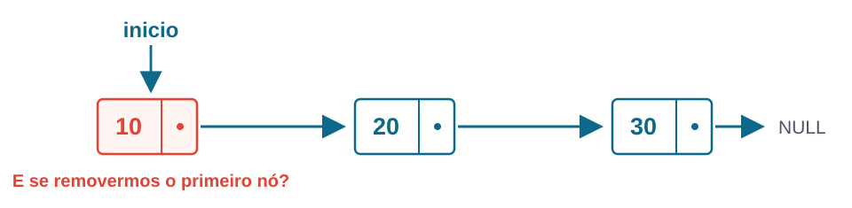
- Um nó do meio tem um
anterior. - Mas quem vem antes do primeiro nó?
Ideia: Usar um nó especial (sentinela) no começo da lista;
Um nó especial antes do primeiro
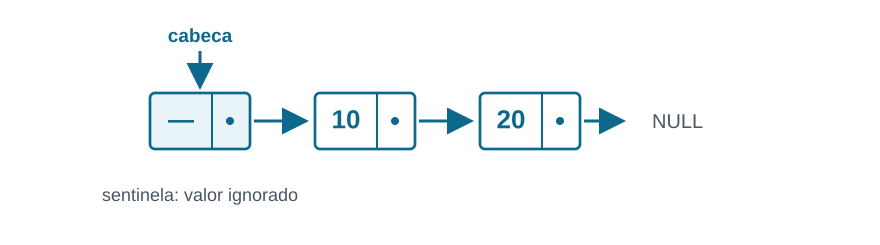
O nó cabeça (ou sentinela):
- Não representa um elemento da sequência.
- Aponta para o primeiro nó com dados.
- Continua existindo mesmo quando a lista está vazia.
Usando uma sentinela
A estrutura pode guardar um ponteiro para a sentinela:
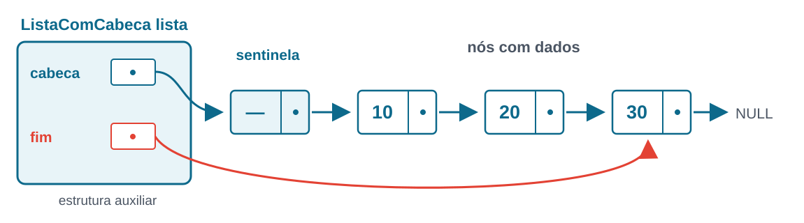
Inicializando uma lista com cabeça
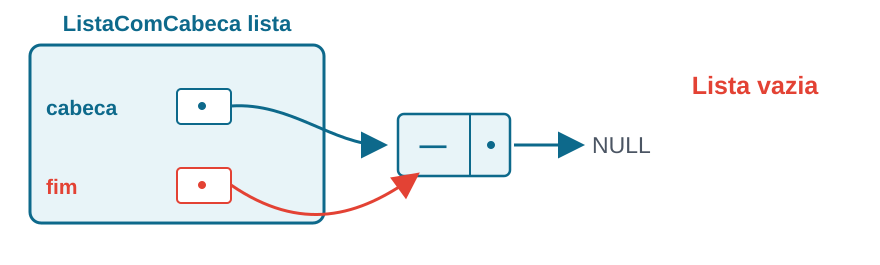
int inicializar(ListaComCabeca *lista) {
lista->cabeca = malloc(sizeof *lista->cabeca);
if (lista->cabeca == NULL) return 0;
lista->cabeca->prox = NULL;
lista->fim = lista->cabeca;
return 1;
}O nó sentinela deverá ser liberado ao destruir a lista!!
Quais são os invariantes agora?
Lista vazia ou não vazia:
cabeca->proxaponta para o primeiro elemento com dados (NULLse vazio).fim->prox == NULL(ou seja,fimé o último nó)
Como percorrer a lista?
O primeiro elemento está em cabeca->prox.
Problema: remover um valor
Remova a primeira ocorrência do valor 10.
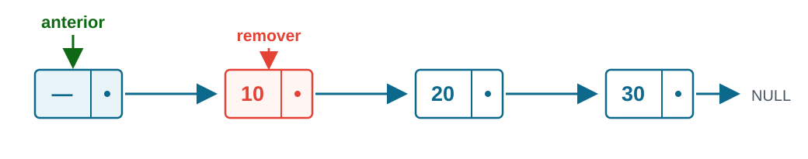
Podemos começar com anterior = lista->cabeca.
Remoção com sentinela (código)
void remover_valor(ListaComCabeca *lista, int valor) {
No *anterior = lista->cabeca;
while (anterior->prox != NULL &&
anterior->prox->valor != valor)
anterior = anterior->prox;
if (anterior->prox == NULL) return;
No *removido = anterior->prox;
anterior->prox = removido->prox;
if (lista->fim == removido)
lista->fim = anterior;
free(removido);
}O que ficou mais simples?
Antes:
Depois:
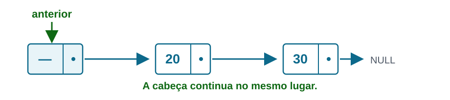
Não precisamos tratar anterior == NULL: sempre existe um nó anterior.
E se removermos o último nó?
O trecho a seguir continua necessário:
Se era o único elemento, então anterior aponta para a sentinela.
Resultado: fim == cabeca e cabeca->prox == NULL.
Outro problema: inserir no final
Temos uma sentinela e um ponteiro fim.
Objetivo: inserir no final, inclusive se a lista estiver vazia.
Podemos evitar um if para a lista vazia?
Inserção no final com sentinela (código)
void inserir_final(ListaComCabeca *lista, int valor) {
No *novo = malloc(sizeof *novo);
if (novo == NULL) return;
novo->valor = valor;
novo->prox = NULL;
lista->fim->prox = novo;
lista->fim = novo;
}Funciona mesmo com a lista vazia! Nesse caso, fim aponta para o nó cabeca.
ListaLigada e sentinela são coisas diferentes
ListaLigadaé uma estrutura auxiliar.- A sentinela é um nó do encadeamento, sem dado válido.
- Podemos usar as duas técnicas juntas (como vimos) ou separadas!
Também podemos embutir No cabeca na estrutura ListaLigada. Mas cuidado: se fim apontar para &cabeca, mover a estrutura pode invalidar esse ponteiro (por exemplo, ao usar realloc no vetor de entradas do EP2).
Listas duplamente ligadas
E se cada nó apontasse para os dois lados?
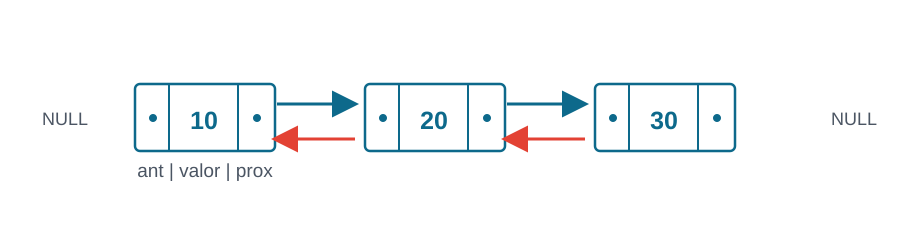
Podemos percorrer a lista nos dois sentidos.
Problema: inserir depois de um nó
Já temos o endereço do nó com valor 10 (pos).
Queremos inserir o valor 20 depois dele.
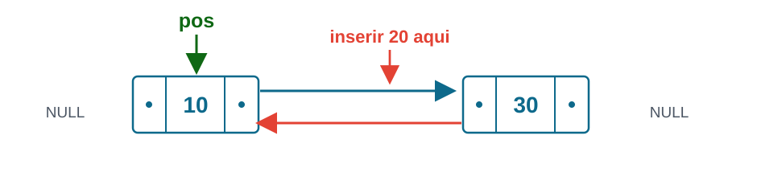
Quais ponteiros precisam mudar?
Inserção na lista dupla (código)
// Supomos que pos pertence à lista.
int inserir_apos_dupla(NoDuplo *pos,
int valor) {
if (pos == NULL) return 0;
NoDuplo *novo = malloc(sizeof *novo);
if (novo == NULL) return 0;
novo->valor = valor;
novo->ant = pos;
novo->prox = pos->prox;
if (pos->prox != NULL)
pos->prox->ant = novo;
pos->prox = novo;
return 1;
}O resultado da inserção
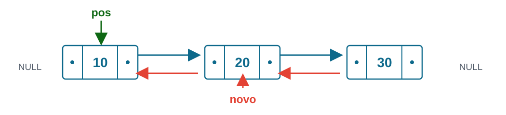
novo->antaponta parapos.novo->proxaponta para o próximo nó antigo.- Os dois nós vizinhos passam a apontar para
novo.
Qual é a vantagem de ter ant?
Se já temos o endereço de um nó, podemos removê-lo sem procurar seu anterior.
- Seu
antaponta para o nó anterior. - Seu
proxaponta para o nó seguinte. - Ajustamos os vizinhos e depois usamos
free.
Listas circulares
E se o último nó apontar para o primeiro?
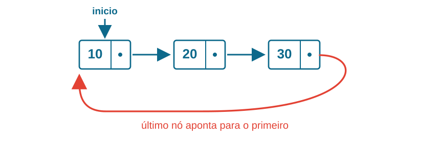
Em uma lista circular, o último nó não aponta para NULL.
Ele aponta de volta para o primeiro nó.
Como percorrer uma lista circular?
Nosso percurso antigo usava:
Isso não funciona em uma lista circular não vazia.
Como saber que completamos uma volta?
O que muda?
Percorrer a lista agoa precisa verificar se coltamos ao inicio;
Se tiver ponteiro fim: em uma lista circular não vazia, fim->prox == inicio
Pilhas e filas
Pilhas e filas: o que muda?
Pilhas ou filas são estruturas de dados onde ordem de inserção/remoção afeta o resultado das operações
- Pilhas: Last In, First Out
- Filas: First In, First Out
Uma lista ligada permite inserir e remover em diferentes posições.
Implementação de filhas e pilhas podem ser feitas de diversas formas, como listas ligadas ou vetores.
Pilha e fila descrevem o comportamento da estrutura, não sua implementação
Pilhas: último a entrar, primeiro a sair
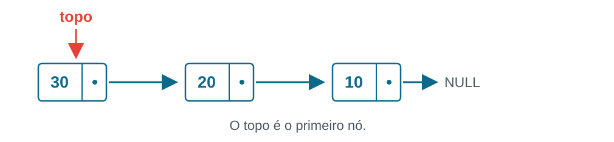
LIFO: Last In, First Out.
- Empilhar (push): adicionar no topo.
- Desempilhar (pop): retirar do topo.
- Consultar o topo (peek): olhar sem remover.
Problema: uma pilha com lista ligada
Temos a pilha abaixo e queremos empilhar 40.
Perguntas:
- Onde devemos inserir o novo nó?
- Como remover o topo depois?
- Precisamos guardar um ponteiro para o final?
Pilha com lista ligada: solução
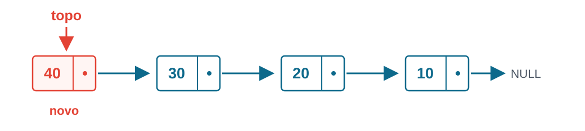
- O topo é o primeiro nó.
push: inserir no início.pop: remover do início.
Basta guardar No *topo: ambas as operações alteram poucos ponteiros.
Filas: primeiro a entrar, primeiro a sair
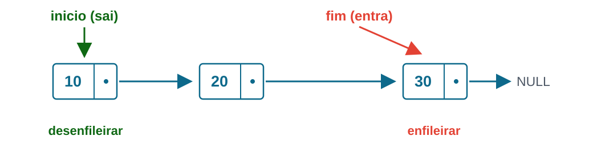
FIFO: First In, First Out.
- Enfileirar (enqueue): adicionar no final.
- Desenfileirar (dequeue): retirar do início.
- Consultar o primeiro (front): olhar sem remover.
Problema: uma fila com lista ligada
Queremos inserir 40 e, depois, retirar 10 da fila.
Perguntas:
- Em qual extremidade inserimos? Em qual removemos?
- Guardar apenas
inicioseria eficiente? - Qual representação simplifica as duas operações?
Fila com lista ligada: solução
enqueue: inserir no final, usandofim.dequeue: remover do início, usandoinicio.
Não precisamos de lista duplamente ligada.
Com inicio e fim, as duas operações fazem trabalho constante (isto é, independente da quantidade de dados).
Cuidado: fila com um único nó
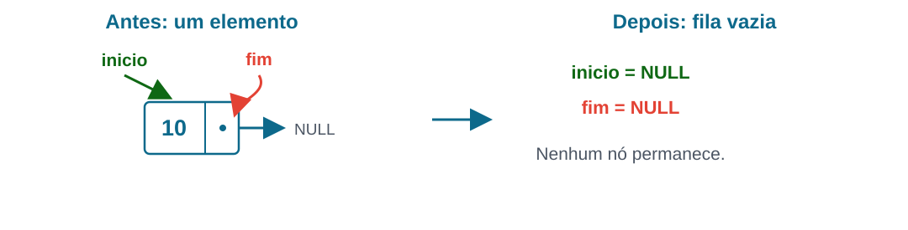
Ao desenfileirar o único elemento, a fila fica vazia.
Precisamos atualizar tanto inicio quanto fim.
Caso contrário, fim continuaria apontando para memória liberada.
Uma fila usando lista circular?
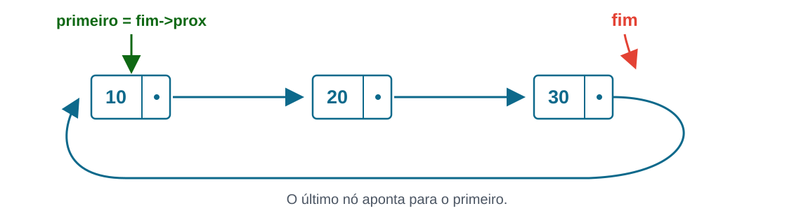
Se guardamos apenas fim, então fim->prox é o primeiro nó.
- Enfileiramos depois do último.
- Desenfileiramos o primeiro.
Também precisamos tratar a fila vazia e a retirada do único nó.
Comparando as implementações
| Pilha | Fila | |
|---|---|---|
| Insere | No início | No final |
| Remove | Do início | Do início |
| Ponteiros úteis | topo |
inicio e fim |
| Trabalho por operação | Constante | Constante |
A representação depende das operações que queremos oferecer.
Também é possível implementar pilhas e filas usando vetores.
Exercícios: listas ligadas
- Implementar a remoção do primeiro nó com um valor em lista duplamente ligada.
- Escrever um percurso que imprima os elementos de uma lista circular.
Exercícios: pilhas e filas
- Escreva uma função para desenfileirar usando
Filacominicioefim. - Desenhe os ponteiros necessários para enfileirar em uma lista circular mantendo apenas
fim.
Referências
- Paulo Henrique Pisani. Listas ligadas — partes 1 e 2. Material de Programação Estruturada, UFABC, 2021.